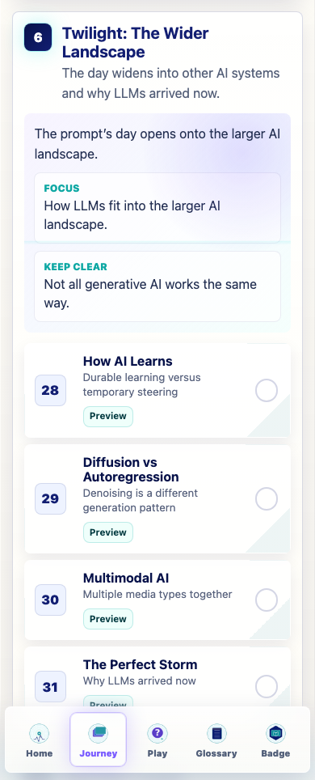
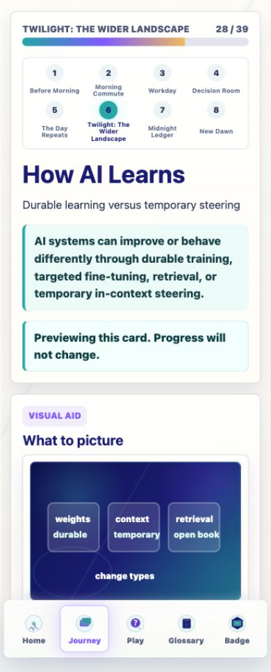
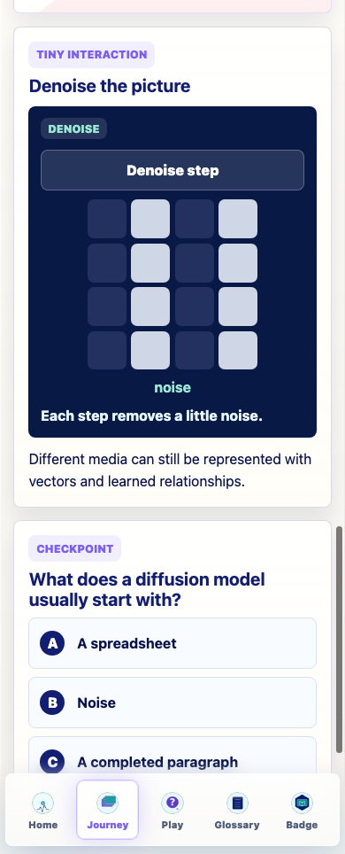
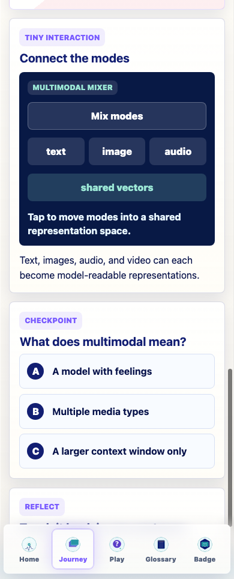
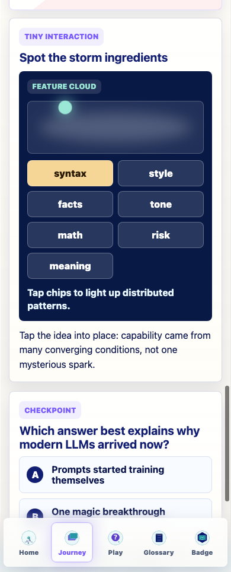
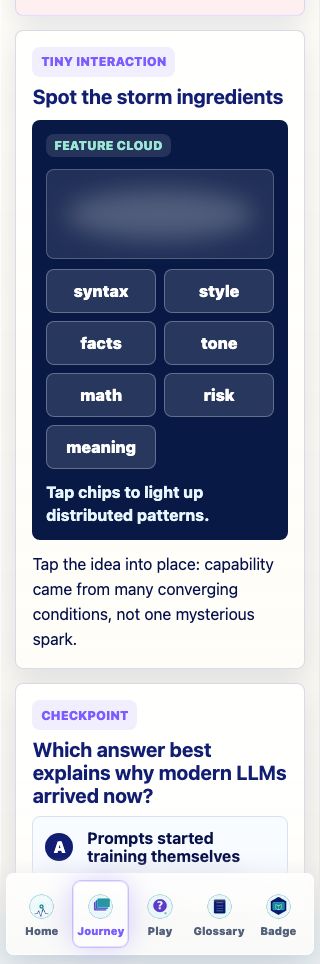

v0.23 Twilight: The Wider Landscape
This documentation-only audit reviews the current Journey stage where learners widen from LLM mechanics into other AI systems and the conditions that made modern LLMs possible.
Date: 2026-06-07. Cards: 28-31. Screenshots: 51 PNG captures.
Executive Summary
The Twilight stage is coherent and should stay in place. The first three cards are accurate but visually and architecturally thin. The Perfect Storm is strong, but its current tiny interaction is generic and should be replaced with storm-ingredient interaction states.
Major Content Findings
- Keep the current stage order.
- Convert the first three cards to the richer lesson schema.
- Use How AI Learns as a synthesis map, not a repeat.
- Keep Diffusion and Multimodal concise but sharper.
Major Visual Findings
- How AI Learns needs a learning-modes matrix.
- Diffusion needs a denoise-vs-append contrast.
- Multimodal needs a tighter media input/output map.
- Perfect Storm is the best future Image 2 candidate.
Cards Audited
| No. | Card | Current state | Recommendation |
|---|---|---|---|
| 28 | How AI Learns | Accurate durable/temporary distinction; visual and interaction are too generic. | Revise. |
| 29 | Diffusion vs Autoregression | Clear denoising idea; needs visible contrast with autoregressive text. | Revise lightly. |
| 30 | Multimodal AI | Good definition; visual risks oversimplifying shared representations. | Revise lightly. |
| 31 | The Perfect Storm | Strong rich-schema card; tiny interaction is mismatched. | Keep and polish. |
Representative Screenshots






Recommended Assets
Image 2
Recommended: The Perfect Storm textless ZenTron Origami convergence scene. Use the PNG only as atmosphere; keep labels and teaching copy in HTML.
Not recommended yet: How AI Learns, Diffusion, and Multimodal should first receive coded SVG/HTML diagrams because exact labels and relationships matter.
Coded SVG/CSS
- How AI Learns: learning-modes matrix.
- Diffusion: denoise-vs-append split diagram.
- Multimodal: media input/representation/output map.
- Perfect Storm: tap-lit convergence streams.
Verification
npm run typecheck: passed.npm run build: passed with existing Vite large-chunk warning.npm run build:pages: passed with existing Vite large-chunk warning.npm run audit:answers: passed.
Known Issues
- The existing Vite large-chunk warning remains.
- The Perfect Storm interaction mismatch remains in the live app by design; this audit did not implement changes.
- Long Journey-page screenshots needed clean headless Chrome capture after the in-app browser timed out.